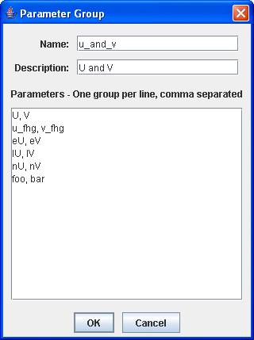

Parameter Groups Editor
The Parameter Groups Editor is opened through the Tools
menu in the Main Display window with Tools->Parameters->Groups and allows
for the specification of "parameter groups", named groups of parameter names.
 Image 1: Parameter Groups Editor
Image 1: Parameter Groups EditorProperties
- Parameter Group - Lists the names of the parameters that are being grouped together in the terms that will be used to list them in McIDAS-V.
- Description - Represents the user-made description used to represent the parameter group names.
- Params - Represents the way that McIDAS-V stores the names of the parameters. This is necessary so McIDAS-V can look up the selected parameters.
There are two sets of defaults: user defaults in the tab User Groups,
and system groups supplied with McIDAS-V in the System Groups tab.
Look at the system defaults for examples.
The system settings cannot be edited by the user, but right clicking a row
allows you to copy a group to the "user defined" table. When you do this the
Parameter Groups Properties window allows you to define the sets of parameters
that fall under this group.

Image 2: Parameter Groups Properties
Properties
- Name - Represents the group name for the selected parameters.
- Description - Represents the user-made description used to represent the parameter group names.
- Parameters - Represents the way that McIDAS-V stores the names of the parameters. This is necessary so McIDAS-V can look up the selected parameters.
Menus
The File menu has these unique items:
- New Row - Opens a Parameter Group window, which allows you to define the sets of parameters
that fall under the group.
- Open - Allows you to open an eXtensible Markup Language (XML) file (*.xml).
- Import - Allows you to import an eXtensible Markup Language (XML) file (*.xml).
- Export to File - Allows you to save your Parameter as an eXtensible Markup Language (XML) file (*.xml).
- Export to Plugin - Opens the Plugin Creator window with all of your aliases loaded in.
- Export Selected to Plugin - Opens the Plugin Creator window with your selected aliases loaded in.
- Close - Closes the Parameter Defaults Editor window.